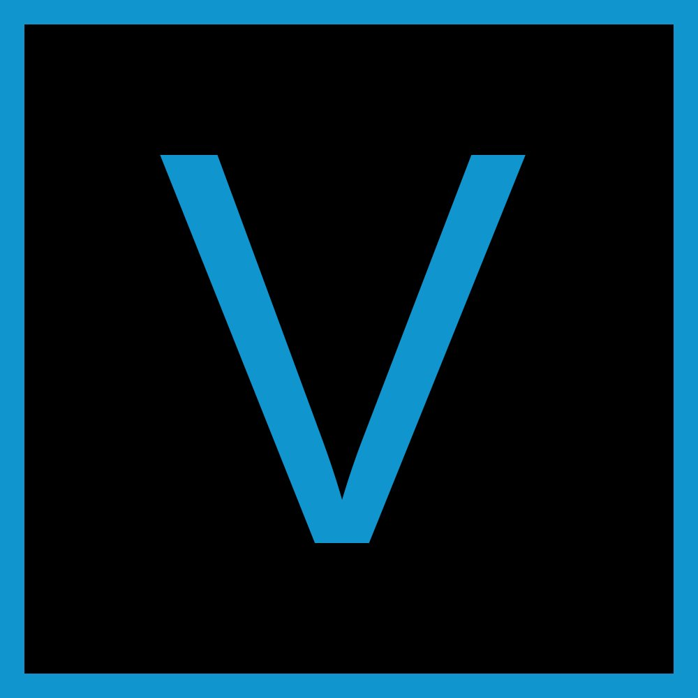
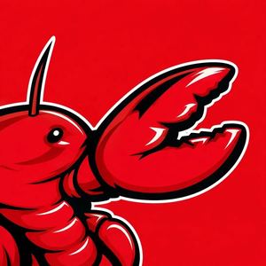
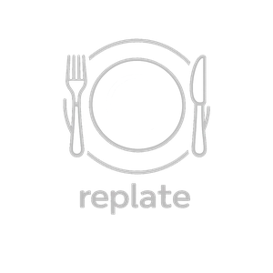

York University CS student. I build tools that solve real problems, and I’ve been doing it since I was 11.

Sony VegasMy first program was in Scratch. I was 11 and had no idea what I was doing, but something clicked. Games came next, animations, Roblox scripting in Lua. By the time I was building real-time databases and shipping software for a healthcare company, it felt like a natural progression.
Most of my projects start the same way: something bothers me, I look for a solution, I find broken or outdated software, so I build it myself. That approach has produced a Chrome extension and a media downloader I still use daily.
Outside of code I do video editing in Sony Vegas, photography with Lightroom, and play a lot of games.

Real-time chat application supporting 15+ concurrent users with live messaging and authentication. Built on Supabase subscriptions for real-time data sync. Designed backend workflows to handle user sessions, message storage, and live state updates across all connected clients simultaneously.
Chrome extension with a Node.js backend that tracks Instagram follower changes over time. Implemented diffing algorithms to detect new followers, unfollowers, and following list changes between snapshots. Timestamped data stored in SQLite enables historical comparison and trend tracking, with no account credentials required.
Desktop MP3/MP4 downloader with a GUI built in Python using customtkinter. Achieves 30% faster downloads than browser-based tools. Integrated yt-dlp and Pillow for media extraction, format conversion, and live thumbnail previews. Built to solve a recurring frustration with ad-riddled sites while sourcing audio for video editing.

Recipe suggestion web app that analyzes users’ available ingredients and returns relevant recipes to reduce food waste. Designed the ingredient input, parsing logic, and dynamic recipe rendering. Built and delivered a functional prototype within a 24-hour hackathon, then presented to a panel of judges.
Experience, education, skills, and all projects in one place.